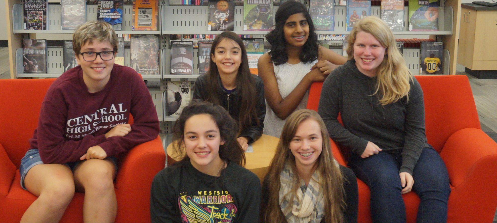

Play Syntax Game and brush up on some de-bugging, or learn something new on how code is formated. This game was coded by our two game devs, who worked really hard to make it happen.
Check it out!
Want to get involved in Omaha's growing tech scene? Go to our Tech Hot Spots page and learn about some awesome events and spaces that you can be a part of. You'll be suprised at the amount of local learning oppurtunities that you have.
Check it out!
Learn about co-founder of mycity.dog and Kick Punch Creative, Jeannie North. She is a budding entrepreneur, designer and developer from omaha, and is also a co-founder of mycity.dog and Kick Punch Creative.
Check it out!

Get to know the young girls, some who may have never coded before, but were able to build this site is a short period of time.
Check it out!
...
Previous
Next
What is Tech Around O!?
Tech Around O! is the baby of the inaugural Omaha Girls Who Code high school group. It's goal is to show the youth of Omaha a glimpse into the local tech scene. You can explore profiles of people in Omaha who are involved in tech, learn about Omaha tech hot spots, play an awesome tech game, or even read profiles on us, the creators of the site! So go and see the Tech Around O!